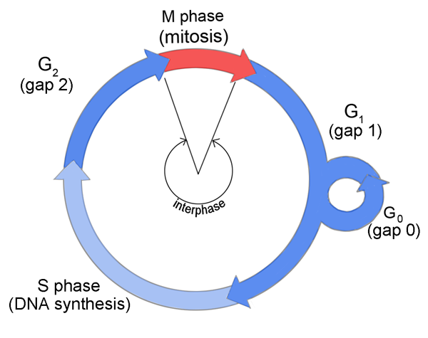
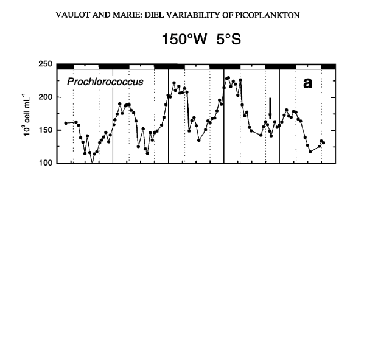
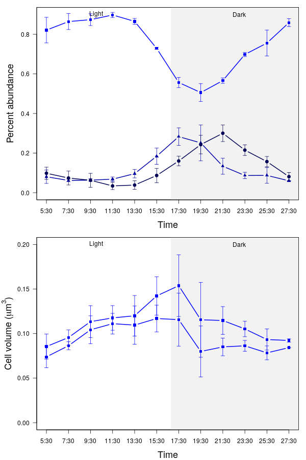

Ángel López-Urrutia
Centro Oceanográfico de Gijón
Instituto Español de Oceanografía
“Transcriptomic Experiments on Climate Change Acclimation of Marine Microorganisms"


600nm
- 0.11 µm³
- 25 fgC

700nm
- 0.18 µm³
- 40 fgC
- x1.6


- Bergmann's rule: Individuals in colder environments grow more slowly but are larger as adults.
- Ectothermic organisms usually have smaller body size when reared in warmer conditions.










| Temp | Min vol | Max vol | Increase |
|---|---|---|---|
| 17 | 0.1 | 0.17 | 1.70 |
| 26 | 0.1 | 0.2 | 2.01 |
| 26 | 0.07 | 0.16 | 2.09 |


Summary
- The average cell size of Prochlorococcus populations does not follow the temperature size rule
- Unimodal relationship between cell-size and temperature both during exponential and stationary phases
- Increase in size during stationary phase due to cells transitioning to G0
- Evolution of growth rate with time and adaptation to extreme warm temperatures
- Changing temperature size relationships during the 24 hour cycle

Laura Alonso-Saez
Antonio S. Palacio
Ana M. Cabello
Laurence Garczarek
Iñaki Huskin and Laura Díaz